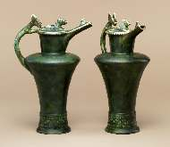
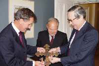
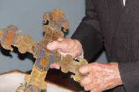
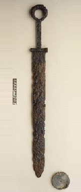
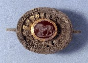
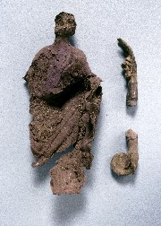
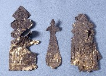

|
NEW ACQUISITIONS
Pair of pottery copies of the Basse-Yutz flagons
English, c. 1931
Made by George Clews & Co Ltd, Stoke-on-Trent, Staffordshire,
these earthenware lidded jugs, covered in a matt dark green glaze,
are simplified copies of the great bronze flagons from Basse-Yutz,
Eastern France (on show in Room 50). Found in 1927 the bronze
flagons are the finest examples of Early Celtic art from anywhere
in Europe. Acquired in 1929 they aroused huge excitement: their
beauty and fine craftsmanship was, and still is, considered remarkable.
Interest was fuelled by the Museum's own publicity campaign to
raise the purchase price of £5000, obtained eventually with the
help of a long list of distinguished subscribers.
These copies, made soon after the arrival of the bronze originals
in the Museum, are reduced in size (they measure 27.3cm while
the originals are 39.6cm high) and would have made perfect mantelpiece
ornaments. The matt green mottled glaze imitates the patinated
bronze finish of the originals and was part of the taste for special
glazes inspired by oriental ceramics that has dominated western
pottery in the 20th century. The factory that made them, George
Clews & Co Ltd, was one of many that produced such glazes in an
industrial context and the copies were cast in moulds in large
numbers. They were sold at Clews & Co's London outlet near the
Museum, the former at Gamages department store in Holborn.
From early on the in the Museum's history, famous objects like
the Portland vase or the marble bust of Clytie have been disseminated
in popular form by many different manufacturers. However, the
Clews & Co copies remain so far the only copies known to have
been made of the Basse-Yutz flagons.
Both originals and copies will be displayed together in Room 50,
case 8, from July to September 2004.
For further information see J. Rudoe, 'Inspired ceramics', British
Museum Magazine, Number 49, Summer 2004, pp. 58-59, and H. Calvert,
Chameleon Ware Art Pottery: A Collector's Guide to George Clews,
Schiffer Publications, Westchester 1998, p. 28.
P&E
2004,1-1,1a and b
Purchased from the British Museum Friends Modern Collection Running
Fund
AN ALTAR
CROSS REBORN
An enamelled plaque has been restored to its original setting
of a fourteenth century Spanish altar cross thanks to the generosity
of a private collector, Edmund de Unger. The plaque, which represents
the figure of Christ crucified, surrounded by stars, was removed
prior to 1895 when the cross was acquired by the British Museum.
The demand of wealthy art collectors in the nineteenth century
meant that many artworks were broken up and their component parts
sold separately. The figure of St John the Evangelist which would
have decorated the right arm of the cross was probably also disposed
of in this way and is still missing.
Acquired by Edmund de Unger in 1971 the plaque was exhibited in
the British Museum in 1981 as part of his larger collection of
enamels known as the Keir collection. The collaboration was a
fruitful one. Not only was the plaque recognised as belonging
to the cross, but the warm relationship that developed between
Edmund de Unger and Neil Stratford, the Keeper of Medieval and
Later Antiquities at the time, led to the donation of the gift
more than twenty years later.
The question remains, where is the missing St John?
Presented in recognition of Neil Stratford, Keeper of Medieval
and Later Antiquities from 1975-1998.
The cross will be displayed in Case 4, Gallery 42.
RARE ROMAN SWORD FROM PEVENSEY, SUSSEX
The sword is a complete example of a type known as a ring-pommel
sword. This type of short sword was adopted by the Roman army
during the 2nd century AD and continued in use into the 3rd century.
It is made of iron, with a relatively short and broad tapered
double-edged blade, an integral iron hilt terminating in a ring-pommel,
and a distinctive bow-tie-shaped hilt guard.
Although the scabbard (of wood or leather) and the hilt fittings
(of wood or bone) have perished, the copper-alloy chape from the
end of the scabbard survives. It is a large circular box-chape
with a tinned surface and decorative incised ring-mouldings. Apart
from slight damage to the chape and to the sword's cutting edges
both are intact. The chape has a stable patina and the light corrosion
products on the sword also appear to be stable.
The sword has been in the hands of at least five successive owners.
Accompanying documentation describes the finding of the sword
and chape in 1940 in the village of Pevensey, just outside the
castle, during some drainage works. The whereabouts of some silver
coins of Commodus (AD180-92), said to have accompanied the find,
is no longer known.
This purchase was generously funded by the British
Museum Friends.
The sword will be displayed as soon as possible in the Roman
Britain gallery (Room 49).
A NEW GODDESS FOR ROMAN BRITAIN: THE 'NEAR BALDOCK' HOARD
This hoard of
Roman temple treasure consists of 26 gold and silver objects found
by metal detectorist Alan Meek in September 2002, near Baldock
in Hertfordshire. It includes gold jewellery, a silver figurine
and gold and silver plaques (thin decorative sheets). The objects
were temple treasure, all of them probably gifts from individual
worshippers. They appear to have been taken out of the temple
and carefully buried, perhaps for safekeeping, in the later 3rd
or 4th century AD. In the event, for reasons we shall never know,
they were not retrieved. Several of the plaques have inscriptions
that show they were dedicated to a goddess named Senua. The figurine
is probably Senua herself, a goddess not known until this find
- a new goddess for Roman Britain. She seems to have been likened
to the Roman goddess Minerva and may have been a local water goddess.
Perhaps she presided over a sacred spring, or perhaps she was
a river goddess: a river named Senua is known to have been located
somewhere in southern England.
The hoard was
declared Treasure at a Coroner's Inquest on 20th March 2003. It
is of national importance and has been acquired by the British
Museum, where it is now on display in gallery 49. Its purchase
was generously funded by the British
Museum Friends and the National
Art Collections Fund.
Interim accounts
of the hoard can be found in the British
Museum Magazine Number 46, Summer 2003 (p.7) and on the website
of the Portable Antiquities Scheme.
|

Pair
of pottery copies of the Iron Age Basse Yutz flagons, English,
c. 1931

Neil MacGregor and former Keeper Neil Stratford
receiving the cross from Edmund de Unger.

The Spanish altar
cross.

The Pevensey sword.

Gold clasp with carnelian gemstone

Silver figurine of the goddess Senua

Gold votive plaques |